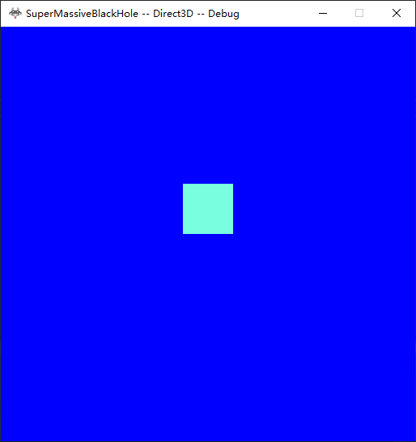
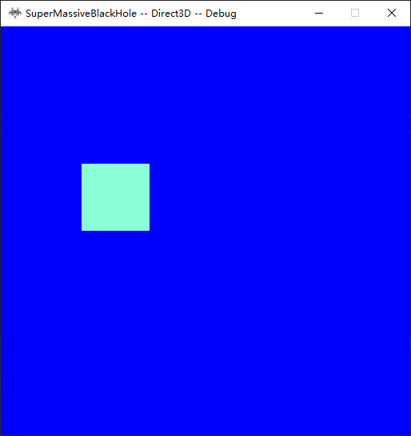
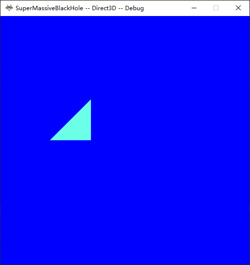
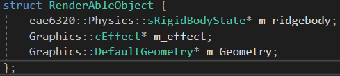
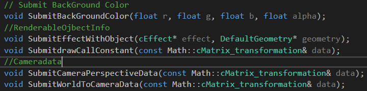
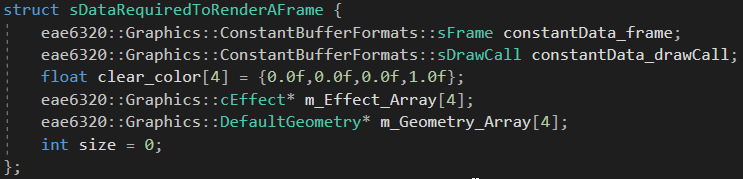

Assignment5
Squre in the center

Squre move to left

Replace Squre with Triangle

The User needs to provide data to initialize effects and geometry.
Code define A RenderAbleObject

Interfaces to submit render data The Draw call info is the transformation matrix for the object to transform from local space to world space

The data needed to render a frame takes 296 bytes on x64 system and 260 bytes on x86 system
It has only one drawcall buffer cause we are currently doing one draw call per frame

Some Thoughts
There are several thing I think wold be interesting to talk about.
Firstly, I have the renderable object store pointers to effects geoemtry and ridiged body state.
However, The RenderObject is acting like a Observer, instead of an owner to those assets.
Those assets are store in some other place of in My_Game instance, which is resposible for all logic of game
The RenderAbleObject gain access to those assets will not be reference counted, Cause it is not neccessary as long as My_Game run in a sequential manner Advantages would be you could change
The RenderAbleOjbect by pointing those pointers to other assects, and different GameObject, not neccessarly renderableObject could share the same assets
Secondly,Talking about assets, what should be considered as assets? I think assets are those resources shared by multiple threads,which have to be or contain some kind of reference or pointers, and
have to be reference counted. Things passing by value do not need to be reference counted, such as Backgorund Clear Color, and data used to derive other data do not need to be referecne counted,
Such as infomation of the camera.Hence they are not assets
Thirdly, We used extrapolation to make the objects and camera moves smooth, even when the movment system in run at 15 fram per second
Since the extrapolation is calculated everytime before submite a rendering frame, the outcome looks like the movment system is running as fast as rendering
However with our current simple volocity based movement you can easily see the objects flash back when you stop. The idea is if you change the behavious in between two frame.
The extrapolation would be totally wrong. Letting the player controls acceleration could help with the problem
About the build
press space to see the triangle, Use arrow key to move the camera and use "Home" "Delete" "END" "PGDN" To move the object around
MovingSqure_win32.zip
MoveingSqure_x64.zip